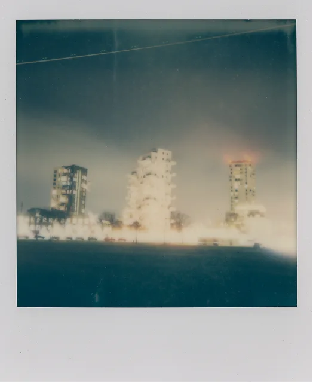

Vinder
Instant Ugen var noget af en succes med over 784 bidrag. Så det var ikke nemt at finde en vinder. Efter et par lange, men spændende dage, blev dommerne enige om vinderen og de 6 nominerede.

Amager Strand Om Natten
Stefan Grage
Beskrivelse: Amager Strand, København. Lokalt omtalt som Københavns mini-Manhattan. Lang eksponering, Polaroid Now+ gen 2 i manuel tilstand med en i-Type farvefilm for at lave en lang eksponering.
Nominerede
Amager Strand Om Natten
Stefan Grage
Beskrivelse: Amager Strand, København. Lokalt omtalt som Københavns mini-Manhattan. Lang eksponering, Polaroid Now+ gen 2 i manuel tilstand med en i-Type farvefilm for at lave en lang eksponering.

Amager Forbrænding
Stefan Grage
Beskrivelse: Jeg ville give min højre arm for en smøg. Taget med et Lomomatic Square.

Brændte Mandler 1
Stefan Grage
Beskrivelse: Stranden ved mit sommerhus i Løserup. Udløbet instax mini-film. Jeg varmede den i mikrobølgeovnen. Jeg burde have læst lidt om, hvordan man varmer et instant-foto i mikrobølgeovnen: Fotoet brød i brand i ovnen.

2 x Ørestad
Stefan Grage
Beskrivelse: En dobbelteksponering fra mit nabolag, Ørestad. Taget med et Lomomatic Square.

Hænderne Væk Fra Mit Happy Meal!
Stefan Grage
Beskrivelse: Et tilfældigt billede fra Burger King. Som det fremgår, ville den yngste ikke dele sit Happy Meal (eller hvad et børnemåltid nu kaldes på Burger King). Taget med et Instax Mini (kan ikke huske hvilket kamera).

Amager Strand
Stefan Grage
Beskrivelse: Fra denne vinkel ligner København en storby. Taget med et Polaroid Now+ Gen 2, med et gult filter.